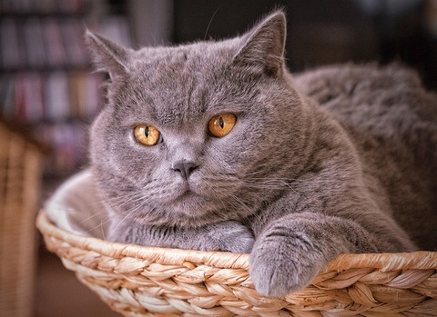

Подробная информация: Этот кот — настоящий граф. Любят когда на него обращают внимание, но ничего не хочет делать для этого.
Подробная информация: Этот кот — настоящий граф. Любят когда на него обращают внимание, но ничего не хочет делать для этого.
Подробная информация: Удивительно красивый мальчик, с очень выразительным взглядом и нежной шкуркой. Ласковый. любит играть и много кушает.
Подробная информация: Настоящий котоненавистник, очень любит людей, но совершенно ненавидит других котов и кошек.
Подробная информация: Обожает цветы и позировать на камеру. Как только учует фотоаппарат сразу мчится туда.
Подробная информация: Настоящая королева. Любит томно наблюдать за людьми в квартире, лежа на краю дивана.

Подробная информация: Рыжая бестия, шарахается от любого шороха, очень пугливый. Но если привыкнет — лучшый кот.
Подробная информация: Очень умный и талантливый кот. По ночам иногда читает сказки.
Подробная информация: Любишь маленьких котят — ставь лукас. Вот так его и назвали.
Подробная информация: Грутно-кэт. Грустит всегда: утром, днем и вечером. Также любит погрустить в выходные.
Подробная информация: Котэ-удивляка. Любит удивляться по любому поводу. В эти моменты особенно шикарен.